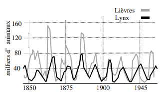
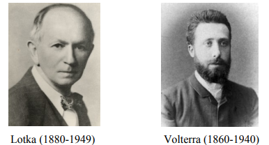

Au XIXème siècle, des scientifiques se sont intéressés à l’évolution des populations de lièvres et de lynx dans la baie d’Hudson. Cette analyse des populations a été commandée par une société canadienne collectant les fourrures récupérées par les trappeurs. Les lièvres étant les proies des lynx :

On observe que les populations de lièvres et de lynx dépendent l’une de l’autre. Effectivement, lorsque la population de proies (les lièvres), décroît, celle des prédateurs (les lynx), décroît elle aussi.
$$x_{n+1} = ax_n - cx_ny_n \text{ et } y_{n+1} = -by_n + dx_ny_n$$
Pour ces deux population on a les équations suivantes :
$$x_{n+1} = 1,05x_n - 0,001 x_ny_n \text{ et } y_{n+1} = 0,97y_n + 0,0002 x_ny_n$$
Avec :
- $a$ le taux d'accroissement de la population des proie en l’absence de
prédateurs
- $b$ le taux de diminution de la population de prédateurs en absence de proies
- $c$ correspond à l’efficacité avec laquelle les prédateurs chassent les proies
- $d$ correspond à l’efficacité avec laquelle la consommation de proies permet
d’augmenter la population de prédateurs
- $xy$ correspond aux nombres de rencontres possibles entre prédateurs et
proies
Les coefficients utilisés ici proviennent d’études menées sur le terrain.
code pour trouver le point d’équilibre:
{% codeblock python True:text-sky-400 False:text-sky-400 from:text-violet-400 print:text-sky-400 %}
from math import *
x=0
y=0
#a,b,c et d étant des coefficients prévus à l'avance selon l’évolution des populations des espèces étudiées
def evolution(a,b,c,d):
x=(1-c)/d
y=(1-a)/b
return x,y
evolution(1.05, -0.001, 0.97, 0.0002)
# exemple des lièvres et des lynx
{% endcodeblock %}
On peut à partir de ces équations déterminer un point d’équilibre. Deux populations de départ pour lesquelles les populations de lynx et de lièvres resteront constantes. Pour cela, il faut résoudre $x_n = x_{n+1}$ et $y_n = y_{n+1}$
On trouve $x = 150$ et $y = 50$
Prédire l’évolution des populations, savoir à l’avance si une espèce est en danger d’extinction, être capable de connaître le nombre d’individus nécessaire à la survie d’une espèce, ce sont des préoccupations intemporelles. Platon (Les Lois) et Aristote (Politique) se demandaient déjà quelle serait la population optimale pour une cité. Aujourd’hui encore, on cherche à trouver le nombre maximal de poissons que l’on peut pêcher pour que la population reste constante d’une année sur l’autre.
Les mathématiciens Alfred James Lotka et Vito Volterra se sont eux aussi
posé cette question. Respectivement en 1925 et 1926, ils proposent un modèle
prédateur-proie.

Pour leur modèle, les deux mathématiciens partent d’hypothèses de départ.
Tout d’abord, en l’absence de prédateurs, ils partent du principe qu’une population
croît indéfiniment. Ainsi, en l’absence de proie, le nombre de prédateurs décroît
indéfiniment. En outre, l’interaction entre prédateurs et proies implique une
diminution du nombre de proies et à une augmentation du nombre de prédateurs.
Prenons $x(t)$ le nombre de proies à l’instant $t$, et $y(t)$ le nombre de prédateurs
à l’instant $t$:
D’après le modèle Lotka-Volterra, on a:
$x_{n+1} = ax_n - cx_ny_n$ et $y_{n+1} = -by_n + dx_ny_n$
Avec :
- $a$ le taux d'accroissement de la population des proie en l’absence de
prédateurs
- $b$ le taux de diminution de la population de prédateurs en absence de proies
- $c$ correspond à l’efficacité avec laquelle les prédateurs chassent les proies
- $d$ correspond à l’efficacité avec laquelle la consommation de proies permet
d’augmenter la population de prédateurs
- $xy$ correspond aux nombres de rencontres possibles entre prédateurs et
proies
A partir de ces équations on peut déterminer, comme vu précédemment, un point
d’équilibre. C'est-à-dire, des populations initiales de proies et de prédateurs qui
restent constantes au cours du temps. Cela revient à poser:
$x_n = ax_n - cx_ny_n$ et $y_n = -by_n + dx_ny_n$
Ce modèle permet ainsi d’anticiper l’évolution des populations, et peut donc aider à éviter l’extinction des espèces.
{% codeblock python True:text-sky-400 False:text-sky-400 from:text-violet-400 print:text-sky-400 %}
from math import *
#x et respectivement y étant les populations de proies et respectivement prédateurs
#a,b,c et d étant des coefficients prévus à l'avance selon les espèces étudiées, et n le nombre de boucles
def evolution(a,b,c,d,n,x,y):
for i in range (n)
x=a*x - b*x*y
y= c*y + d*x*y
return x,y
{% endcodeblock %}
Crédits photo :
Lièvre : Jérôme Blondel
Lynx : Don DeBold from San Jose, CA, USA, CC BY-SA 2.0
Samuel Rimlinger, élève au Lycée Franco-Allemand de Buc
{% endblock %}